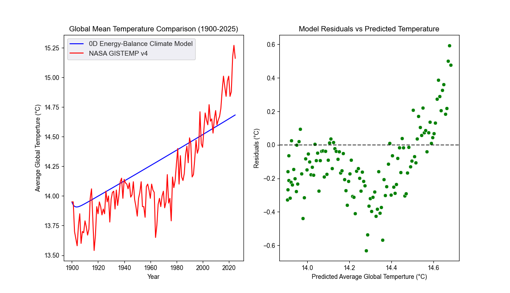

Geophysics · Climate Science · Computational Modeling
[ Home | About | Research | Projects | Contact ]
Author: Carden Taylor | Period Modeled: 1900–2025 | Repository: github.com/carden-taylor/0d-climate-model
Starting from radiative balance (P_in = P_out), incoming solar power across Earth's circular cross-section is compared against graybody thermal emission across the full spherical surface:
P_in = pi * R_E^2 * S_0 * (1 - alpha)
P_out = 4 * pi * R_E^2 * epsilon_0 * sigma * T_K^4
T_c = [ (S_0 * (1 - alpha)) / (4 * epsilon_0 * sigma) ]^(1/4) - T_0
To account for atmospheric greenhouse gases, net radiative forcing is summed across CO2, CH4, and N2O using pre-industrial baseline concentrations (1900) and exponential annual concentration growth rates:
| Species | Warming Influence | 1900 Baseline | Annual Growth Rate |
|---|---|---|---|
| CO2 | 73.5% | C_0 = 295.0 ppm | r_c = 0.0030 (0.30%/yr) |
| CH4 | 18.5% | M_0 = 860.0 ppb | r_m = 0.0063 (0.63%/yr) |
| N2O | 8.0% | N_0 = 275.0 ppb | r_n = 0.0018 (0.18%/yr) |
Individual forcing terms (Delta F_CO2, Delta F_CH4, and Delta F_N2O, including overlap terms) combine into time-dependent total forcing F_tot(t) and drive the transient ODE:
dT_K / dt = (1 / (rho * c_p * d)) * [ F_tot(t) - epsilon_0 * sigma * T_K^4 ]
Because the nonlinear ODE is integrated forward in time, Forward Euler's Method (T_{K,n+1} = T_{K,n} + h * g(t_n, T_{K,n})) is used in Python with step size h = 0.01 yr (315,360 s) over 125 years (1900–2025) starting from T_K(0) = 287.10 K:

[ « Back to Projects | Home ]
Last updated: November 2026